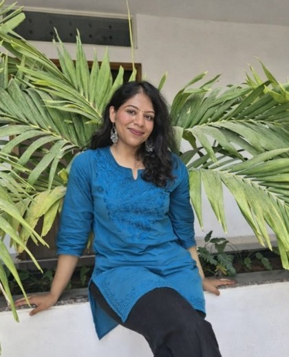

Intern
Naina Kataria
Msc Thesis Project Intern
Naina Kataria is a Research Intern at IIT Delhi’s FABB Lab (CBME) and an M.Sc. Biotechnology candidate at VIT Vellore. Her current research focuses on the synthesis of MIL-100(Fe), a pH-responsive metal-organic framework designed for targeted delivery of curcumin to treat vascular restenosis. Dedicated to translating complex biotechnology into innovative clinical therapies, she aims to advance her research in tissue engineering and precision drug delivery through doctoral studies.
Email: nainakataria02@gmail.com
LinkedIn: View Profile
Research Interests
- Biomaterials and Drug Delivery
- Tissue Engineering
- Nanotechnology
Education
- M.Sc. in Biotechnology (2024-2026)- Vellore Institute of Technology, Vellore
- PG Diploma in Molecular and Biochemical Technology (2023-2024)-Venkateswara College, University of Delhi (South Campus)
- B.Sc.(H) in Microbiology (2020-2023)- Bhaskaracharya College of Applied Sciences, Dwarka, University of Delhi
MSc Dissertation
- Synthesis and Characterization of MIL-100(Fe) as a pH-Responsive Curcumin Nanoplatform for Targeted Restenosis Therapy (ongoing)
- Microfluidic Fabrication of Optimized Microspheres for sustained Intra-Articular Drug Delivery: In Vitro Assessment of Drug Release Kinetics and Cellular Biocompatibility
Publications
- BookChapter: Drug repurposing for fungal infections. Progress in Molecular Biology and Translational Science, Vol 207, Elsevier.
- Chapter: Advances in CRISPR-Cas systems for gut microbiome. Progress in Molecular Biology and Translational Science, Vol 208, Elsevier.